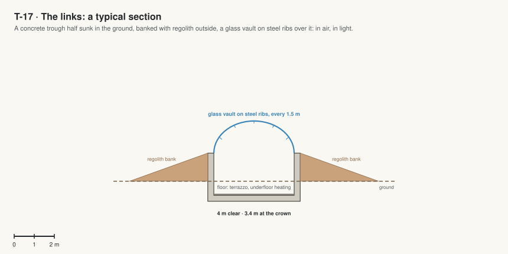

T-17 · The links
The sealed galleries that join every building to the next, so you can go everywhere in shirt sleeves.
Jim, 5 Oct 2026: "since bad conditions, all the schools buildings should be connected and sealed, so there should not be open area to the air. all open space should be covered by dome or sealed". Every room, court and garden is under a roof, a glass vault or a dome; every building is joined to the next by a sealed link; people meet the outside only at airlocks.

| Code | Room | What it is for | Size |
|---|---|---|---|
| T17-01 | Sun court link | From the classroom wing's lobby down three steps into the Sun court. | 15 m² |
| T17-02 | Pod stop collar | A short glass collar from the entrance airlock's side to the door of the pod at the pod stop. | 2 m² |
| T17-03 | Infinity link | From the upper garden dome to Infinity Hall's foyer. | 66 m² |
| T17-04 | Greenhouse link | From the upper garden dome to the Garden of Primes. | 100 m² |
| T17-05 | Observatory collar | From the lowest garden dome into the observatory. | 10 m² |
| T17-06 | Terminal link | From the observatory to the pod terminal. | 33 m² |
| T17-07 | Sports link | From behind Infinity Hall's stage to the sports dome. | 60 m² |
| T17-08 | Hangar link | From the far end of the Garden of Primes to the robotics and rover hangar. | 100 m² |